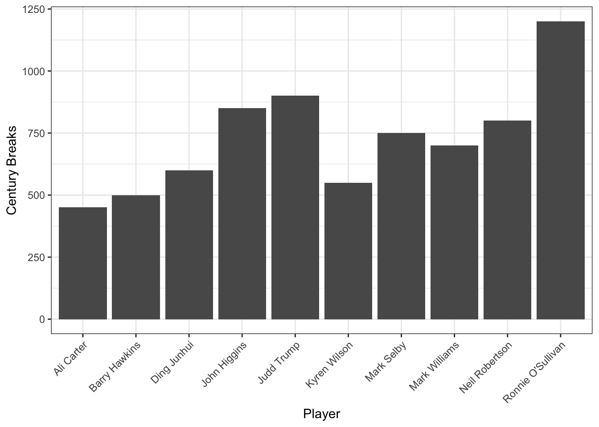
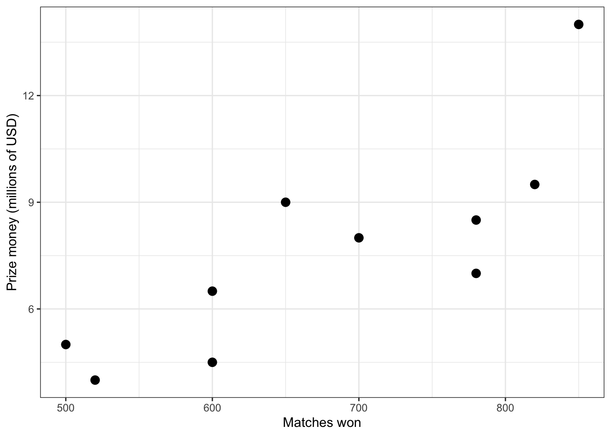
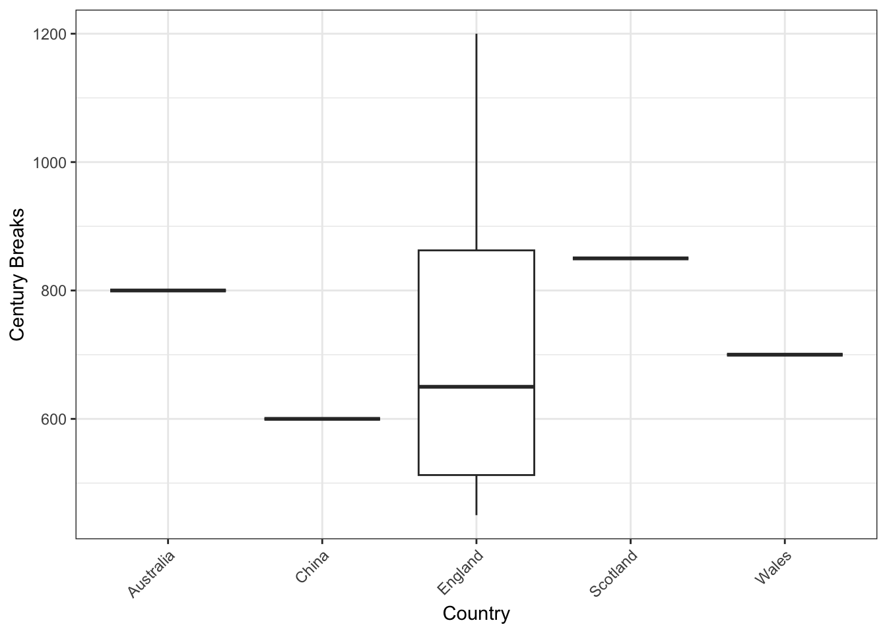

# A tibble: 6 × 11
Player_ID Player_Name Country Age World_Ranking Matches_Played Matches_Won
<dbl> <chr> <chr> <dbl> <dbl> <dbl> <dbl>
1 1 Ronnie O'Sul… England 48 1 1200 850
2 2 Judd Trump England 34 2 950 650
3 3 Mark Selby England 40 3 1100 780
4 4 Neil Roberts… Austra… 42 4 1000 700
5 5 John Higgins Scotla… 49 5 1300 820
6 6 Mark Williams Wales 48 6 1200 780
# ℹ 4 more variables: Matches_Lost <dbl>, Highest_Break <dbl>,
# Century_Breaks <dbl>, Prize_Money_USD <dbl>Unit 2 Review – tidyverse and ggplot
1 Introduction
Unit 2 focused on two tools for data analysis in R: the tidyverse and ggplot2. The tidyverse provides an easy and clean way to import, transform, and summarize data. ggplot2 provides a flexible way to build graphs that clearly communicate and summarize data.
In this review, I will summarize the main ideas from Unit 2 and then apply them on a real dataset of professional snooker players. My goal is to create a nice guide on how and when to use the tidyverse and ggplot tools.
2 What is the tidyverse?
The tidyverse is a collection of packages made to make data science a tad easier. In class, we used tidyverse tools to read in .csv files, manipulate data, create new variables, filter observations, and compute summary statistics.
One major benefit of the tidyverse is its readability. Using the pipe operator, we can easily pass data in through steps, which makes the logic of both reading and writing the code much easier to follow. This is especially useful when cleaning data.
3 Types of variables
Another important part of Unit 2 is recognizing the different kinds of variables, because the type of variable affects both the summaries and the plots that make sense to use.
A categorical variable is simple and places qualitative observations into groups or categories.
A quantitative variable records quantitative values. These could be either:
- continuous, measured data
- discrete, counted data
Understanding what kind of data you have is important in figuring out what kind of numerical summaries or visualizations you should provide.
4 Most important tools we used in tidyverse
tibble(), to create an enhanced data frameread_csv(), to import datafilter(), to keep rows based on conditionsmutate(), to create or modify columnsgroup_by(), to specify a groupsummarize(), to compute summariesselect(), to select one or more columns as a data framecase_when(), to compute multiple if_else() statements
These tools make it easier to move from raw data to summaries in a very understandable process.
5 Numerical summaries
We also learned how to describe data numerically. Depending on the type of variable and the shape of the distribution, different summaries are better.
Some of the main summaries we used were:
- mean
- standard deviation
- median
- interquartile ranges
- counts
- proportions
- grouped summaries for comparing categories
For example, if a variable is skewed, the median and IQR may describe the center and spread better than the mean and standard deviation. If the variable is categorical, proportions are more useful than using an average.
6 Introduction to ggplot2
ggplot2 is a plotting system that drastically makes it easier to plot and graph. ggplot builds a plot by combining lines, making it easier to modularly create your graph. This usually includes:
- the dataset
- aesthetic decisions in
aes() - specified type of plot such as bars, points, or boxes
- axis labels
- a theme
This approach makes plots easier to customize and helps explain what each part of a graph is doing.
We also learned that plot choice depends on the type of variables involved. For example:
- one categorical variable -> bar plot
- one quantitative variable -> histogram
- one categorical and one quantitative variable -> boxplot or violin plot
- two quantitative variables -> scatterplot
This framework is useful because it gives a logical reason for choosing one graph over another, rather than just picking a graph that looks nice.
7 Time to apply these skills
To review this unit, I will use a dataset on professional snooker players. This dataset includes both categorical and quantitative variables, which makes it a good fit.
Using this dataset, I will:
- inspect the structure of the data
- create new variables with
mutate() - compute summary statistics
- build visualizations
- interpret what the summaries and graphs show
This will demonstrate both tidyverse data wrangling and ggplot proficiency.
8 Loading and inspecting the data
First, I want to load and read the data, so I can understand its format.
8.1 Load packages and data
In this case, the data contains info on the player names, country of origins, rankings, match results, scoring statistics, and prize money earned. We have a nice mix of both categorical and quantitative variables, so we can practice our ggplot skills well here.
8.2 Select important data
Code
# A tibble: 10 × 7
Player_Name Country Age World_Ranking Matches_Won Century_Breaks
<chr> <chr> <dbl> <dbl> <dbl> <dbl>
1 Ronnie O'Sullivan England 48 1 850 1200
2 Judd Trump England 34 2 650 900
3 Mark Selby England 40 3 780 750
4 Neil Robertson Australia 42 4 700 800
5 John Higgins Scotland 49 5 820 850
6 Mark Williams Wales 48 6 780 700
7 Ding Junhui China 37 7 600 600
8 Kyren Wilson England 32 8 500 550
9 Barry Hawkins England 45 9 600 500
10 Ali Carter England 44 10 520 450
# ℹ 1 more variable: Prize_Money_USD <dbl>This is a simple example of select(). It allows me to focus on the variables I want to analyze instead of always working with the full dataset.
8.3 Create new variables
One of the most useful tools, mutate(), allows me to create new columns or variables from our dataset. For example, we will make two new variables, “win_percentage” and “prize_money_millions” so that we can get eahc player’s win percentage and their total prize money in the millions unit.
Code
# A tibble: 10 × 3
Player_Name Win_Percentage Prize_Money_Millions
<chr> <dbl> <dbl>
1 Ronnie O'Sullivan 0.708 14
2 Judd Trump 0.684 9
3 Mark Selby 0.709 8.5
4 Neil Robertson 0.7 8
5 John Higgins 0.631 9.5
6 Mark Williams 0.65 7
7 Ding Junhui 0.667 6.5
8 Kyren Wilson 0.625 5
9 Barry Hawkins 0.632 4.5
10 Ali Carter 0.612 4 8.4 Numerical Summaries
Now let’s use numerical summaries to better describe the distributions of our variables.
Code
data |>
summarize(
mean_age = mean(Age),
median_age = median(Age),
mean_wins = mean(Matches_Won),
median_wins = median(Matches_Won),
mean_centuries = mean(Century_Breaks),
median_centuries = median(Century_Breaks),
mean_prize_money_millions = mean(Prize_Money_Millions),
median_prize_money_millions = median(Prize_Money_Millions)
) |>
pivot_longer( #fancy stuff here to display, dont worry about it
cols = everything(),
names_to = "Statistic",
values_to = "Value"
) |>
knitr::kable(digits = 2)| Statistic | Value |
|---|---|
| mean_age | 41.9 |
| median_age | 43.0 |
| mean_wins | 680.0 |
| median_wins | 675.0 |
| mean_centuries | 730.0 |
| median_centuries | 725.0 |
| mean_prize_money_millions | 7.6 |
| median_prize_money_millions | 7.5 |
Now, we get a better look of the mean and medians of each variable of all the players.
8.5 Grouped Summary by Country
Code
# A tibble: 5 × 6
Country players mean_age mean_wins mean_centuries mean_prize_money_millions
<chr> <int> <dbl> <dbl> <dbl> <dbl>
1 Australia 1 42 700 800 8
2 China 1 37 600 600 6.5
3 England 6 40.5 650 725 7.5
4 Scotland 1 49 820 850 9.5
5 Wales 1 48 780 700 7 This summary shows how we can use group_by() and summarize() to work together to describe stats by categories. Because this is a small data set, most countries only have 1 player, but this still represents a good example of a grouped summary.
8.6 Plot 1: Century breaks by player
Since Player_Name is categorical and Century_Breaks is quantitative, a bar chart is a good choice.
Code

This graph makes it easy to compare players directly. A bar chart works well here because our goal is to compare one quantitative value against multiple categories (names).
8.7 Plot 2: Matches won and prize money
For two quantitative variables, our best option is a scatterplot.
Code

This scatterplot helps show that players with more wins also tend to earn more prize money. In general, it makes sense that winning more creates more opportunities to earn more.
8.8 Plot 3: Boxplot of century breaks by country
Because century breaks is quntitative and country is qualitative, a boxplot is a good idea here.
Code

This boxplot compares the distribution of century breaks across countries. Boxplots are useful because they show the center, spread, and outliers of a quantitative variable within each category. The number of players per country is small, but it still demonstrates how boxplots can be used to compare groups.
8.9 Take aways from our analysis
We used a lot of key concepts from topic 2 here.
First, tidyverse functions make analysis more readable and organized. I was able to move from importing the data, to selecting variables, to creating new variables, to grouped summaries in a clear process, that is easilly followed.
Second, the type of variable matters when choosing a graph. I used bar charts when comparing a quantitative measurement across players, and scatterplots when comparing two quantitative variables.
Third, mutate() is especially useful because it lets me create variables that are more meaningful than the originals. In this dataset, win percentage was more informative than raw wins alone, and prize money in millions was easier to interpret than large dollar amounts.
Finally, the visualizations help communicate patterns more clearly than a table alone. For example, it is easier to compare century breaks or win percentages across players in a graph than by scanning rows of numbers.
9 Conclusions
Overall, this snooker dataset was a good example to test out some topics and skills from unit 2. It allowed me to combine data wrangling and data visualization in one work flow. Thank you for reading.